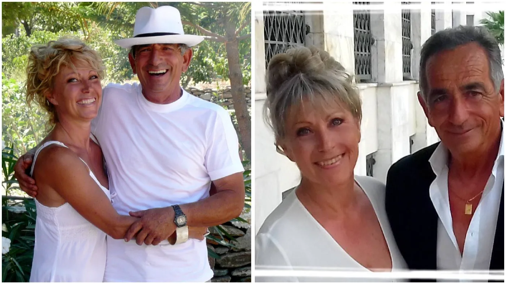
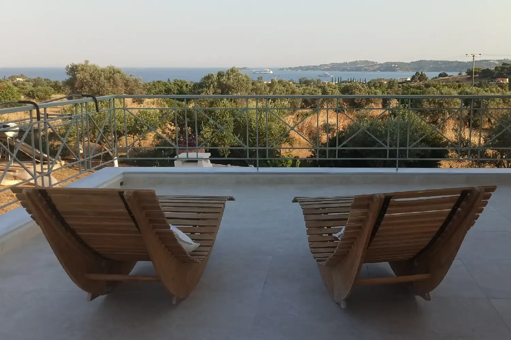

About us
A lovely encounter
Our story
Making a dream come true
I am French, originally from Bordeaux. After a 17-year career in the pharmaceutical industry, I set up an estate agency in Arcachon, near Bordeaux. My love for Greece goes back 50 years, and throughout all those years, I have divided my time between France and Greece.
I had always intended to settle here permanently and, as I believe you should always follow your dreams, that is exactly what I did.
I love decorating, restoring old furniture, browsing in antique shops. I love sharing a good meal between friends, drinking a good Bordeaux, gardening, making marmalades, photography… well, I am always active.
I have had the chance to meet George, who was born on the island of Kea — so he is a Tziotis. He is a third-generation beekeeper. Together we carefully enlarged and decorated our second house at Petrothalassa, 6 km from Ermioni. It is located in a prime spot that has remained wild, and we share the pleasure of receiving.
George is a history buff and, of course, a beekeeper. Unfortunately he speaks neither English nor French. But in Greece we are very attached to the word filoxenia — and then everything is easier.

